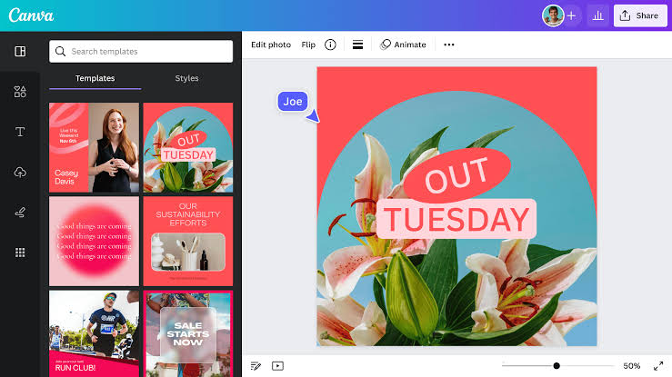

˗ˏˋ ¿Qué es Canva? ˎˊ˗
(ㅅ´ ˘ `) Canva es una plataforma de diseño grafico en linea que permite crear contenido visual atractivo de manera facil y rapida. Ofrece plantillas y herramientas para diseñar.
˗ˏˋ ¿Para qué sirve? ˎˊ˗
ദ്ദി(ᵔᗜᵔ)Diseñar gráficos y materiales visuales, crear contenido para redes sociales, desarrollar presentaciones y documento, personalizar plantillas y elementos, compartir y descargar diseños en diferentes formatos.

˗ˏˋ ¿Cómo lo puedo utilizar? ˎˊ˗
(ㅅ´ ˘ `) 1. Crea una cuenta y accede a la plataforma.
2. Elige una plantilla o comienza desde cero.
3. Personaliza con texto, imágenes y elementos.
4. Utiliza herramientas de diseño y edición.
5. Comparte o descarga tu diseño en diferentes formatos
˗ˏˋ ¿Quién lo creó? ˎˊ˗
ദ്ദി(ᵔᗜᵔ) Melanie Perkins (CEO y cofundadora), Cliff Obrecht (CFO y cofundador), Cameron Adams (ex CPO y cofundador)
La empresa se fundó en 2012 en Australia.
˗ˏˋ ¿Cómo ha ayudado a la comunidad digital? ˎˊ˗
(ㅅ´ ˘ `) Facilitando el diseño gráfico para todos, fomentando la creatividad y la expresión visual, ofreciendo recursos y herramientas educativas, conectando a diseñadores y creadores de contenido en todo el mundo.
˗ˏˋ ¿Qué la diferencia de las demás aplicaciones? ˎˊ˗
ദ്ദി(ᵔᗜᵔ) La Interfaz intuitiva y fácil de usar, amplia variedad de plantillas y elementos personalizables, integración con redes sociales y plataformas, accesibilidad para no diseñadores y profesionales.
Esto lo hace ideal para crear contenido visual atractivo de manera rápida y sencilla.